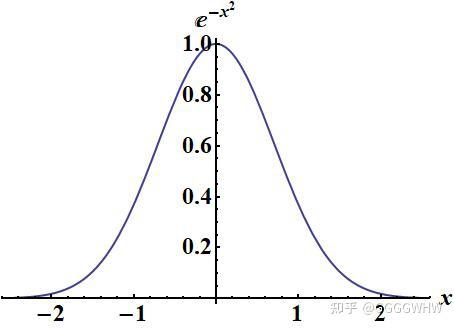
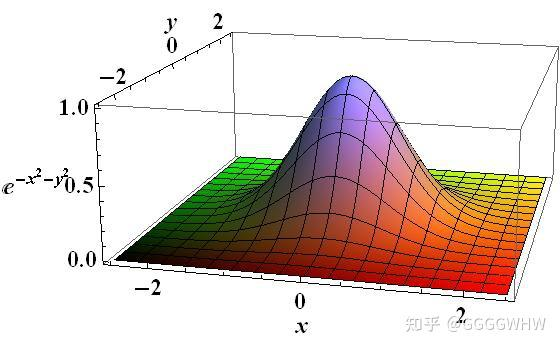
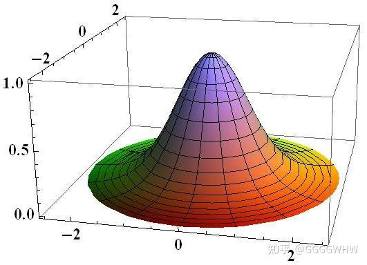

关于e的负x平方的积分
Author: [GGGGWHW]
Link: [https://zhuanlan.zhihu.com/p/651305078?utm_id=0]

简介
在统计学和物理学中经常要对形如 这样的函数进行积分, 相当于求上图中函数曲线与 轴之间所夹的面积. 本文将展示该函数和类似函数的积分过程.
考虑幂级数展开
考虑到 并不能得到一个简单的函数表达式, 所以不妨将被积函数先根据泰勒公式展开.
\begin{align*} & \because e^x=\sum_{n=0}^{+\infty}\frac{x^n}{n!} \\& \therefore e^{-x^2}=\sum_{n=0}^{+\infty}\frac{(-x^2)^n}{n!}= \sum_{n=0}^{+\infty}\frac{(-1)^nx^{2n}}{n!} \\&\therefore F(x)=\int e^{-x^2}\mathrm{d}x = \sum_{n=0}^{+\infty}\int \frac{(-1)^nx^{2n}}{n!}\mathrm{d}x = \sum_{n=0}^{+\infty} \frac{(-1)^nx^{2n+1}}{n!(2n+1)}+C \end{align*}
令 , 即 , 则 . 这个幂级数的收敛半径是 , 但是收敛速度随着 的变大迅速变慢. 比如:
当 时, 和的误差为 .
当 时, 和的误差为 .
当 时, 和的误差为 .
当 时, 和的误差为 .
当 时, 和的误差为 .
所以这个幂级数对于求积分上限为较大数字的定积分不是很实用, 还不如直接通过分割被积函数, 然后进行数值积分方便.
考虑函数对称性
虽然不知道 的简单表达式, 但是不影响我们求一个特殊的定积分: .
考虑到被积函数是一个偶函数,所以 .
变形后, 由于不能直接求被积函数的原函数 , 所以上面的操作对于我们解决问题依然没有帮助.
考虑在高维空间解决
再换一个思路, 有理数域解决不了的问题, 放到实数域说不定就解决了; 实数域解决不了的问题, 放到复数域说不定就解决了. 同样地, 一元函数解决不了的问题, 换成二元函数说不定就解决了.
将文章开头的函数图像绕着纵轴旋转 , 旋转过程中函数曲线在空间画出一个曲面, 如下图所示:

曲面的函数表达式为 现在我们试着求上图中函数曲面与 平面之间所夹的体积.
\begin{align*}&\int_{-\infty}^{+\infty}\int_{-\infty}^{+\infty}e^{-x^2-y^2}\mathrm{d}x\mathrm{d}y\\=& \int_{-\infty}^{+\infty}\int_{-\infty}^{+\infty}e^{-x^2}\cdot e^{-y^2}\mathrm{d}x\mathrm{d}y\\=& \int_{-\infty}^{+\infty}e^{-x^2}\mathrm{d}x\cdot\int_{-\infty}^{+\infty}e^{-y^2}\mathrm{d}y\\=& (\int_{-\infty}^{+\infty}e^{-x^2}\mathrm{d}x)^2 \end{align*}
惊喜地发现, 这个曲面积分结果恰好是我们要求的曲线积分的平方, 可是我们依然不知道这两个积分的结果.
考虑坐标变换解决
经验告诉我们, 对于轴对称图形, 柱坐标系比直角坐标系用起来会更方便一些.

坐标转换:
于是曲面积分
\begin{align*} & \int_{-\infty}^{+\infty}\int_{-\infty}^{+\infty}e^{-x^2-y^2}\mathrm{d}x\mathrm{d}y\\=& \int_{\theta=0}^{2\pi}\int_{r=0}^{+\infty}e^{-r^2}r\mathrm{d}r\mathrm{d}\theta\\=& 2\pi\int_{r=0}^{+\infty}e^{-r^2}r\mathrm{d}r\\=& \pi\int_{r^2=0}^{+\infty}e^{-r^2}\mathrm{d}(r^2)\\=& -\pi\int_{-r^2=0}^{-\infty}e^{-r^2}\mathrm{d}(-r^2)\\=& -\pi\int_{-r^2=0}^{-\infty}\mathrm{d}(e^{-r^2})\\=& -\pi e^{-r^2}\mid_{-r^2=0}^{-\infty}\\=& -\pi (e^{-\infty}-e^{0})\\=& \pi \end{align*}
之前已经证明曲面积分结果是曲线积分结果的平方, 所以
\begin{align*}& \int_{-\infty} ^{+\infty}e^{-x^2}\mathrm{d}x=\sqrt\pi\\& \int_{0} ^{+\infty}e^{-x^2}\mathrm{d}x=\frac12\int_{-\infty} ^{+\infty}e^{-x^2}\mathrm{d}x=\frac{\sqrt\pi}2\\&\end{align*}
结论
\begin{align*} & \int_{-\infty} ^{+\infty}e^{-x^2}\mathrm{d}x=\sqrt\pi\\& \int_{0} ^{+\infty}e^{-x^2}\mathrm{d}x=\frac{\sqrt\pi}2\\&\end{align*}
【习题】
习题1.
- 求 .
\begin{align*} 解: & \int_{0} ^{+\infty}xe^{-x^2}\mathrm{d}x\\=& \frac{1}{2}\int_{x^2=0} ^{+\infty}e^{-x^2}\mathrm{d}(x^2)\\=& -\frac{1}{2}\int_{-x^2=0} ^{-\infty}e^{-x^2}\mathrm{d}(-x^2)\\=& -\frac{1}{2}\int_{-x^2=0} ^{-\infty}\mathrm{d}(e^{-x^2})\\=& -\frac{1}{2}e^{-x^2}\mid_{-x^2=0} ^{-\infty}\\=& \frac{1}{2}\end{align*}
习题2.
- 求 .
\begin{align*}解: & \int_{0} ^{+\infty}x^2e^{-x^2}\mathrm{d}x\\=& \frac{1}{2}\int_{x=0} ^{+\infty}xe^{-x^2}\mathrm{d}(x^2)\\=& -\frac{1}{2}\int_{x=0} ^{+\infty}xe^{-x^2}\mathrm{d}(-x^2)\\=& -\frac{1}{2}\int_{x=0} ^{+\infty}x\mathrm{d}(e^{-x^2})\\=& -\frac{1}{2}(xe^{-x^2}\mid_{x=0} ^{+\infty}-\int_{x=0} ^{+\infty}e^{-x^2}\mathrm{d}x)\\=& \frac{1}{2}\int_{x=0} ^{+\infty}e^{-x^2}\mathrm{d}x\\=& \frac{1}{2}\times\frac{\sqrt{\pi}}{2}\\=& \frac{\sqrt{\pi}}{4}\end{align*}
补充证明为什么 dxdy=rdrdθ？
直角坐标与极坐标的互化中，为什么 dxdy=rdrdθ？
Author: [予一人]
Link: [https://www.zhihu.com/question/368888687/answer/992671463]
这是一个好问题，而要真正理解这个问题，你首先需要在头脑里消除一种误会：
这样的记号并不代表通常意义上的乘法，因此不能按照通常的多项式乘法来处理。事实上，它们是所谓的楔形积（wedge product），相当于**外积。**严格来讲，这记号应该写作
这种运算规定：
于是
于是
\begin{align*}{\rm d}x\wedge{\rm d}y&={\rm d}(r\cos\theta)\wedge{\rm d}(r\sin\theta)\\&=(-r\sin\theta{\rm d}\theta+\cos\theta{\rm d}r)\wedge(r\cos\theta{\rm d}\theta+\sin\theta{\rm d}r)\\ &=-r\sin^2\theta ({\rm d}\theta \wedge{\rm d} r)+r\cos^2\theta ({\rm d}r \wedge{\rm d} \theta)\\ &=r\sin^2\theta ({\rm d}r \wedge{\rm d} \theta)+r\cos^2\theta ({\rm d}r \wedge{\rm d} \theta)\\ &=r(\sin^2 \theta+\cos^2 \theta) ({\rm d}r \wedge{\rm d} \theta)\\ &=r({\rm d} r\wedge{\rm d} \theta)\\\end{align*}
更新时间：2023-12-22 15:39
转载请注明来源，欢迎指出任何有错误或不够清晰的表达本文链接：https://czruby.github.io/2023/12/21/关于e的负x平方的积分/